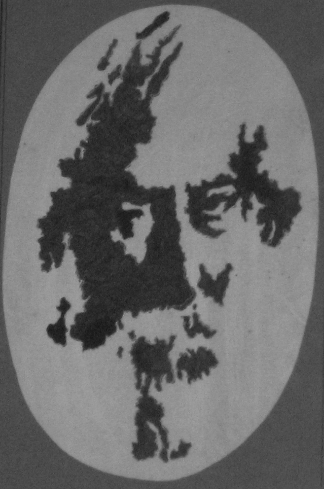
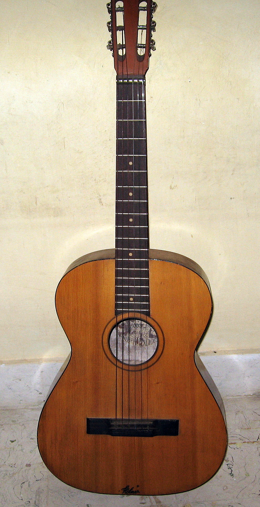

Art and painting

From childhood I was interested in drawing, most of which is attributed to my mother, a
non-professional painter. With the help of Pritam and Satyam Panja (two art teachers),
I was fortunate to learn the basics of art, painting and other forms: like clay,
bamboo and plaster-of-Paris art, apart from the usual charcoal-shading, water and
oil colour painting. I finished 5th year degree in painting during the 10th
board examination to get Chitra
Bisharad, and in the same year been awarded the Sangeet Bibhusan too. I drew this
silhouette of R. Tagore when at 7th standard in school and here are some
Paintings (Class IV-X).
Hawaiian Guitar

This is my old friend, the classical
Hawaiian lap-steel Guitar .
I learned to play at a young age and was awarded
Sangeet Bibhusan in Rabindra
Sangeet (Songs of R. Tagore, the first non-European Nobel laureate in literature)
after six years while I finished my secondary education. I'm also conversant with the
electric guitar and still continue to play when at home. Here are my Tagore renditions:
![Reservoir and islands of Maithan (hometown), 3rd Dyke, India. Krishna and Western Ghats, Kates point, Mahabaleswar, India. Leichtenstein and Eastern Swiss Alps along with Rhein, Hoher Kasten summit, Switzerland. Appenzeller and Urner Alps, Mt. Saentis summit, Switzerland. Alpine four-thousanders in Valais Alps, Zermatt, Switzerland. Sunset in Austrian-Swiss Alps, Konstanz, Germany. Sunset at Porz-Wahn, Cologne, Germany. Sunset by the banks of Rhein, Cologne, Germany. Hudson valley, Mt. Beacon summit, New York.](http://www.physics.iisc.ernet.in/~amitb/picture/maithan1.jpg){kind=link}
{kind=link}
{kind=link}
{kind=link}
{kind=link}
{kind=link}
{kind=link}
{kind=link}
{kind=link}